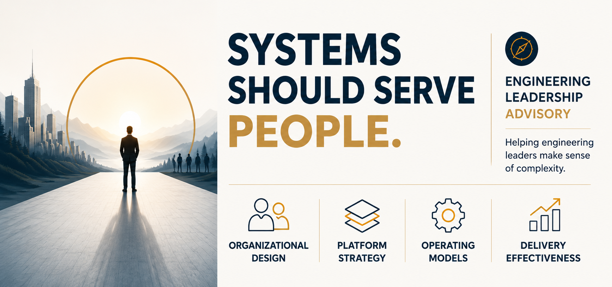

Organisational design
Clarify team boundaries, ownership, leadership roles and decision paths so the organisation can scale without adding confusion.

Fractional CTO advisory / consulting
Practical senior technology leadership for organisations that need to make sense of complexity, strengthen delivery and create the conditions for teams to do their best work.
Clarify team boundaries, ownership, leadership roles and decision paths so the organisation can scale without adding confusion.
Connect architecture, platform choices, resilience, security and business priorities into a direction people can act on.
Make planning, prioritisation, measurement and accountability visible enough to improve delivery predictability.
Turn AI interest into responsible adoption through tool enablement, training, platform-specific context, champions and workshops.
A useful engagement starts with
01
Understand the current system and the outcome that matters.
02
Choose a small number of decisions and changes with leverage.
03
Create evidence, ownership and a path for the team to continue.
Let’s start with a focused conversation about the decision, transition or operating challenge in front of you. The engagement shape follows the need.